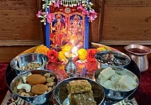

| = |
|
Search | Donate | Create Account | Login | ||
|---|---|---|---|---|---|---|---|
| Content | hide | Aarticle | talk | Read | View score | View history | Tools |
Diwali also known as Deepavali (IAST: Dīpāvalī), is the Hindu festival of lights, with variations celebrated in other Indian religions. It symbolises the spiritual "victory of light over darkness, good over evil, and knowledge over ignorance" Diwali is celebrated during the Hindu lunisolar months of Ashvin (according to the amanta tradition) and Kartika—between around mid-September and mid-November. The celebrations generally last five or six days. Diwali is connected to various religious events, deities and personalities, such as being the day Rama returned to his kingdom in Ayodhya with his wife Sita and his brother Lakshmana after defeating the demon king Ravana. It is also widely associated with Lakshmi, the goddess of prosperity, and Ganesha, the god of wisdom and the remover of obstacles. Other regional traditions connect the holiday to Vishnu, Krishna, Durga, Shiva, Kali, Hanuman, Kubera, Yama, Yami, Dhanvantari, or Vishvakarman. Primarily a Hindu festival, variations of Diwali are also celebrated by adherents of other faiths. The Jains observe their own Diwali which marks the final liberation of Mahavira.The Sikhs celebrate Bandi Chhor Divas to mark the release of Guru Hargobind from a Mughal prison. Newar Buddhists, unlike other Buddhists, celebrate Diwali by worshipping Lakshmi, while the Hindus of Eastern India and Bangladesh generally celebrate Diwali by worshipping the goddess Kali. During the festival, the celebrants illuminate their homes, temples and workspaces with diyas (oil lamps), candles and lanterns. Hindus, in particular, have a ritual oil bath at dawn on each day of the festival.[22] Diwali is also marked with fireworks as well as the decoration of floors with rangoli designs and other parts of the house with jhalars. Food is a major focus with families partaking in feasts and sharing mithai.[23] The festival is an annual homecoming and bonding period not only for families, but also for communities and associations, particularly those in urban areas, which will organise activities, events, and gatherings.[24][25] Many towns organise community parades and fairs with parades or music and dance performances in parks.[26] Some Hindus, Jains, and Sikhs will send Diwali greeting cards to family near and far during the festive season, occasionally with boxes of Indian confectionery. Another aspect of the festival is remembering the ancestors. Diwali is also a major cultural event for the Hindu, Sikh, and Jain diaspora.[28][29][30] The main day of the festival of Diwali (the day of Lakshmi Puja) is an official holiday in Fiji,[31] Guyana,[32] India, Malaysia, Mauritius, Myanmar,Nepal, Pakistan, Singapore, Sri Lanka, Suriname, and Trinid
Diwali also known as Dewali, Divali, or Deepavali (IAST: dīpāvalī)—comes from the Sanskrit dīpāvali meaning 'row or series of lights'.[23][42] The term is derived from the Sanskrit words dīpa, 'lamp, light, lantern, candle, that which glows, shines, illuminates or knowledge'[43] and āvali, 'a row, range, continuous line, series'.
The five-day celebration is observed every year in early autumn after the conclusion of the summer harvest. It coincides with the new moon (amāvasyā) and is deemed the darkest night of the Hindu lunisolar calendar.[45] The festivities begin two days before amāvasyā, on Dhanteras, and extend two days after, until the second (or 17th) day of the month of Kartik.[46] (According to Indologist Constance Jones, this night ends the lunar month of Ashwin and starts the month of Kartik but see this note[d] and Amanta and Purnima systems.) The darkest night is the apex of the celebration and coincides with the second half of October or early November in the Gregorian calendar.[47] The festival climax is on the third day and is called the main Diwali. It is an official holiday in a dozen countries, while the other festive days are regionally observed as either public or optional restricted holidays in India.[49] In Nepal, it is also a multiday festival, although the days and rituals are named differently, with the climax being called the Tihar festival by Hindus and Swanti festival by Buddhists.[50][51]
The five-day long festival originated in the Indian subcontinent and is likely a fusion of harvest festivals in ancient India.[47] It is mentioned in early Sanskrit texts, such as the Padma Purana and the Skanda Purana, both of which were completed in the second half of the 1st millennium AD. The diyas (lamps) are mentioned in Skanda Kishore Purana as symbolising parts of the sun, describing it as the cosmic giver of light and energy to all life and which seasonally transitions in the Hindu calendar month of Kartik.[40][52] Emperor Harsha refers to Deepavali, in the 7th-century Sanskrit play Nagananda, as Dīpapratipadotsava (dīpa = light, pratipadā = first day, utsava = festival), where lamps were lit and newly engaged brides and grooms received gifts.[53][54] Rajasekhara referred to Deepavali as Dipamalika in his 9th-century Kavyamimamsa, wherein he mentions the tradition of homes being whitewashed and oil lamps decorated homes, streets, and markets in the night
